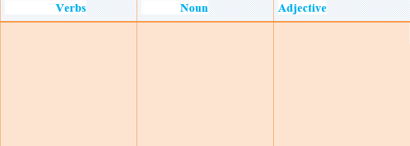

Storage options include batteries, thermal, or mechanical systems. All of these technologies can be paired with software that controls the charge and discharge of energy.
Batteries
There are various forms of batteries, including: lithium-ion, flow, lead acid, sodium, and others designed to meet specific power and duration requirements.
Initially used for consumer products, lithium-ion batteries now have a range of applications including smaller residential systems and larger systems that can store multiple megawatt hours (MWh) and can support the entire electric grid. These systems typically house a large number of batteries together on a rack, combined with monitoring and management units. These systems have a small footprint for the amount of energy they store.
Thermal
Thermal systems use heating and cooling methods to store and release energy. For example, molten salt stores solar-generated heat for use when there is no sunlight.
Ice storage in buildings reduces the need to run compressors while still providing air conditioning over a period of several hours. Other systems use chilled water and dispatchable hot water heaters. In all cases, excess energy charges the storage system (heat the molten salts, freeze the water, etc.) and is later released as needed.
Task 1Vocabulary
Read the text and match the words to make word phrases.
Task 2 Reading and speaking
Read the text and answer the questions.
üîπ What kind of storage options are there?
üîπ Can you name different battery forms?
üîπ What methods can be used to store and release energy?
üîπ What can storesolar-generated heat for use when there is no sunlight?
Sort out the words into different parts of speech categories.
Storage; various; store; management; molten; chilled; period; run; several; release; multiple; reduce; large; support; energy; have; water.

Task4 Listening
Listen and decide if the sentences are true (T)or false (F).
1 The café opened in 1953. __________
2 There are 120 types of ice cream. __________
3 They served more than 8,000 customers last year. __________
4 There is now a 30% discount for students onMondays. __________
5 For children under sixteen, there’s a 50% discounton Mondays. __________
Task 5Writing
✔️ Learn the given lexical units.
✔️ Work in groups and explain the meanings of the given lexical units.
✔️ Try to use them in sentences.
Read the case and give some solutions
Shifts in natural gas supply and demand since the early 2000s have triggered proposals for import and export terminals in coastal locations around the United States. Demand for such facilities is likely to grow with increasing rates of natural gas exports. Clatsop County, Oregon, is one such location that experienced over 10 years of debate surrounding the development of these facilities. The first liquefied natural gas (LNG) facility was proposed in this area in 2004; the final was withdrawn in 2016. While residents expressed support and opposition early on, opposition dominated by the end.